Symbolic generation of evaluating functions.
Contents
This is a fundamental subroutine of the 'JAM' method. It allows equations to be expressed in Cartesian coordinates using non-singular mappings and generates the analytical Jacobians required by the Newton method.
Since there are 5 unknowns in each region, we will reserve a cell array of the proper size to store all the equations.
EQ = cell(NVAR(1),NRegion);
%
Defining Variable Dependencies
All variables will generally depend on the mapped independent variables in a time-dependent 3D space: [z0, r0, q0; t0]. For example, for the pressure in region 1, p1, we declare that:
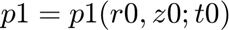
Note: Because this problem is 2D, the q0 dependence has been removed.
syms r0 z0 q0 t0 real for kk = 1:NRegion for j = 1:NVAR(kk) % Declare symbolic variable variable_name = sprintf('%s%d(r0, z0, t0)', list_var{kk}{j}, kk); eval(['syms ' variable_name ';']); eval(sprintf('%s%d= %s;', list_var{kk}{j}, kk, variable_name)); end end
Defining the variables derivatives in both spaces
for kk = 1:NRegion
%Auxiliar variable "0" for j=1:NVAR(kk) eval(sprintf('%s0= %s%d;', list_var{kk}{j}, list_var{kk}{j},kk)); end
The Jacobian J (and its inverse) allows expressing spatial derivatives from the physical coordinates to the mapped space coordinates and vice versa:
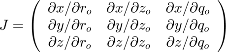
X = [F0, G0, q0]; % Physical domain: (y, x, z). Note: q0 (z-coordinate) is not used as the problem is 2D. xs = [r0, z0, q0]; % Mapped domain. J = jacobian(X, xs); Jinv = simplify(inv(J)); % Getting the basis vectors for the mapped space bc{i} Xc=[r0,z0,q0]; %1:r0-y bc{1}=diff(Xc,r0); %a:z0-x bc{2}=diff(Xc,z0); %c:t0-z bc{3}=diff(Xc,q0); % Selecting vector base ( bc) bbase=bc;
Besides the geometrical Jacobian, we need to consider the time transformation mapping. Given, for example, the x-coordinate in the physical space:
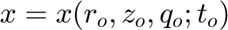
Differentiating the above expression with respect to physical time t, we get:
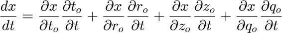
Note that (x, y, z) and t are independent variables, and in this case, 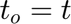. Therefore, 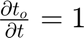. Also, since x, y, z do not explicitly depend on t, 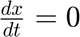. The equation becomes:
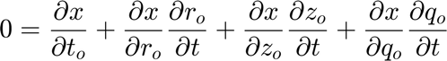
The same derivation applies to the other spatial variables (y, z).
This forms a system of equations allowing us to compute the grid velocities:
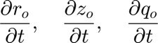
These are named symbolically dr0dt, dz0dt, and dq0dt.
syms dr0dt dz0dt dq0dt real x=X(1); y=X(2); z=X(3); eqn1 = diff(x,t0) +diff(x,z0)*dz0dt +diff(x,r0)*dr0dt+diff(x,q0)*dq0dt==0; eqn2 = diff(y,t0) +diff(y,z0)*dz0dt +diff(y,r0)*dr0dt+diff(y,q0)*dq0dt==0; eqn3 = diff(z,t0) +diff(z,z0)*dz0dt +diff(z,r0)*dr0dt+diff(z,q0)*dq0dt==0; [Aeqn,Beqn]=equationsToMatrix([eqn1,eqn2,eqn3],[dr0dt,dz0dt,dq0dt]); Xeqn=linsolve(Aeqn,Beqn); dr0dt=simplify(Xeqn(1)); dz0dt=simplify(Xeqn(2)); dq0dt=simplify(Xeqn(3));
Derivatives in the physical space can be expressed in terms of derivatives in the mapped space using the inverse Jacobian (Jinv) calculated earlier.
for j = 1:NVAR(kk)
var_name = sprintf('%s%d', list_var{kk}{j},kk); % First derivatives in X eval(sprintf('d%sdy = Jinv(1, 1) * diff(%s, xs(1)) + Jinv(2, 1) * diff(%s, xs(2))+ Jinv(3, 1) * diff(%s, xs(3));', var_name, var_name, var_name,var_name)); eval(sprintf('d%sdx = Jinv(1, 2) * diff(%s, xs(1)) + Jinv(2, 2) * diff(%s, xs(2))+ Jinv(3, 2) * diff(%s, xs(3));', var_name, var_name, var_name,var_name)); eval(sprintf('d%sdz = Jinv(1, 3) * diff(%s, xs(1)) + Jinv(2, 3) * diff(%s, xs(2))+ Jinv(3, 3) * diff(%s, xs(3));', var_name, var_name, var_name,var_name));
%Similarly, time derivative would be: eval(sprintf('d%sdt = diff(%s,t0)+diff(%s,r0)*dr0dt+diff(%s,z0)*dz0dt+diff(%s,q0)*dq0dt;', var_name, var_name, var_name,var_name,var_name));
Second-order derivatives in physical coordinates are obtained using the chain rule again:
eval(sprintf('d%sdyy = Jinv(1, 1) * diff(d%sdy, xs(1)) + Jinv(2, 1) * diff(d%sdy, xs(2))+ Jinv(3, 1) * diff(d%sdy, xs(3));', var_name, var_name, var_name,var_name)); eval(sprintf('d%sdxx = Jinv(1, 2) * diff(d%sdx, xs(1)) + Jinv(2, 2) * diff(d%sdx, xs(2))+ Jinv(3, 2) * diff(d%sdx, xs(3));', var_name, var_name, var_name,var_name)); eval(sprintf('d%sdzz = Jinv(1, 3) * diff(d%sdz, xs(1)) + Jinv(2, 3) * diff(d%sdz, xs(2))+ Jinv(3, 3) * diff(d%sdz, xs(3));', var_name, var_name, var_name,var_name));
Derivatives in the mapped space are straightforward:
eval(sprintf('d%sdr0 = diff(%s, r0);', var_name, var_name)); eval(sprintf('d%sdz0 = diff(%s, z0);', var_name, var_name)); eval(sprintf('d%sdrr0 = diff(%s, r0, r0);', var_name, var_name)); eval(sprintf('d%sdzz0 = diff(%s, z0, z0);', var_name, var_name)); eval(sprintf('d%sdrz0 = diff(%s, r0, z0);', var_name, var_name)); eval(sprintf('d%sdt0 = diff(%s, t0);', var_name, var_name));
end
Auxiliary Variables
In some cases, it's convenient to use auxiliary variables, such as the velocity vector in Cartesian coordinates:
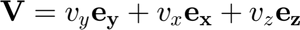 Note: Assuming standard Cartesian (x,y,z) although code uses (y,x,z) based on F0, G0.
V=vy0*bbase{1}+vx0*bbase{2}+0*bbase{3};
If derivatives of auxiliary variables appear in the equations, the same differentiation procedure described above would be repeated for them.
list_aux={'V','p0', 'F0', 'G0'};
for j = 1:length(list_aux)
var_name = sprintf('%s', list_aux{j}); % First derivatives in physical space (using the same logic as before) eval(sprintf('d%sdy = Jinv(1, 1) * diff(%s, xs(1)) + Jinv(2, 1) * diff(%s, xs(2))+ Jinv(3, 1) * diff(%s, xs(3));', var_name, var_name, var_name,var_name)); eval(sprintf('d%sdx = Jinv(1, 2) * diff(%s, xs(1)) + Jinv(2, 2) * diff(%s, xs(2))+ Jinv(3, 2) * diff(%s, xs(3));', var_name, var_name, var_name,var_name)); eval(sprintf('d%sdz = Jinv(1, 3) * diff(%s, xs(1)) + Jinv(2, 3) * diff(%s, xs(2))+ Jinv(3, 3) * diff(%s, xs(3));', var_name, var_name, var_name,var_name));
%Time derivative: eval(sprintf('d%sdt = diff(%s,t0)+diff(%s,r0)*dr0dt+diff(%s,z0)*dz0dt+diff(%s,q0)*dq0dt;', var_name, var_name, var_name,var_name,var_name));
Second order derivatives:
eval(sprintf('d%sdyy = Jinv(1, 1) * diff(d%sdy, xs(1)) + Jinv(2, 1) * diff(d%sdy, xs(2))+ Jinv(3, 1) * diff(d%sdy, xs(3));', var_name, var_name, var_name,var_name)); eval(sprintf('d%sdxx = Jinv(1, 2) * diff(d%sdx, xs(1)) + Jinv(2, 2) * diff(d%sdx, xs(2))+ Jinv(3, 2) * diff(d%sdx, xs(3));', var_name, var_name, var_name,var_name)); eval(sprintf('d%sdzz = Jinv(1, 3) * diff(d%sdz, xs(1)) + Jinv(2, 3) * diff(d%sdz, xs(2))+ Jinv(3, 3) * diff(d%sdz, xs(3));', var_name, var_name, var_name,var_name));
Derivatives in mapped space:
eval(sprintf('d%sdr0 = diff(%s, r0);', var_name, var_name)); eval(sprintf('d%sdz0 = diff(%s, z0);', var_name, var_name)); eval(sprintf('d%sdrr0 = diff(%s, r0, r0);', var_name, var_name)); eval(sprintf('d%sdzz0 = diff(%s, z0, z0);', var_name, var_name)); eval(sprintf('d%sdrz0 = diff(%s, r0, z0);', var_name, var_name)); eval(sprintf('d%sdt0 = diff(%s, t0);', var_name, var_name));
end
Setting up auxiliary velocity operators simplifies writing the equations: Examples: Velocity gradient, rate-of-strain tensor, vorticity tensor, convective term.
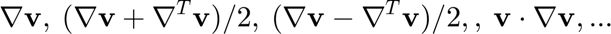
gradientV=[dVdy.',dVdx.',dVdz.']; %$\nabla \mathbf{v}$ DD=(gradientV+gradientV.')/2; %$(\nabla \mathbf{v} + \nabla^T \mathbf{v})/2$ WW=(gradientV-gradientV.')/2; %$(\nabla \mathbf{v} - \nabla^T \mathbf{v})/2$ VnablaV=vx1*zeros(1,3); for i=1:3 VnablaV(i)=simplify(V(1)*dVdy(i)+V(2)*dVdx(i)+V(3)*dVdz(i)); %$\mathbf{v} \dot \nabla \mathbf{v}$ end laplaceV=simplify(dVdxx+dVdyy+dVdzz); %Laplace operator gradientP=[dp0dy,dp0dx,dp0dz]; %pressure gradient divergencV=simplify(dVdx(2)+dVdy(1)+dVdz(3)); %divergence of the velocity
Also, for the quasi-elliptic transformation mapping from Dimakopoulos & Tsamopoulos (2003), we introduce the following auxiliary functions related to the mesh mapping: F0, G0 likely represent the physical coordinates y, x as functions of mapped r0, z0.
g11=dG0dz0^2+dF0dz0^2;
g22=dG0dr0^2+dF0dr0^2;
g12=dG0dr0*dG0dz0+dF0dr0*dF0dz0;
JJ=dG0dr0*dF0dz0-dG0dz0*dF0dr0;
eps1=0.3;
D1=eps1*((dF0dz0^2+dG0dz0^2)/(dF0dr0^2+dG0dr0^2))^0.5+(1-eps1);
dD1dr0=diff(D1,r0);
dD1dz0=diff(D1,z0);
Q1=-(dD1dr0*dF0dz0-dD1dz0*dF0dr0)*JJ/D1;
%
Setting the Equations for Each Region
Using the auxiliary variables defined above, the governing equations (e.g., Navier-Stokes) become simpler to write. Example: Dimensionless Momentum equation (assuming incompressible flow)
MOMENTUM=-(dVdt+VnablaV)-gradientP+laplaceV/Re;
that proyecting in base bc is
MOMENTUMP=0*MOMENTUM;
for i=1:3
MOMENTUMP(i)=(MOMENTUM*(bc{i}.'));
end
%2D momentum
EQ{1,kk}=MOMENTUMP(1); %axial momentum
EQ{2,kk}=MOMENTUMP(2); %radial mometum
EQ{3,kk}=divergencV; %conservation
EQ{4,kk}=g22*dF0dzz0+g11*dF0drr0-2*g12*dF0drz0-Q1; %
EQ{5,kk}=g22*dG0dzz0+g11*dG0drr0-2*g12*dG0drz0; %
end
Setting Up the Full Equation System
To facilitate numerical implementation and avoid complex indexing for different regions/boundaries, unknowns originating in a specific region are formally extended to all other regions. Their values (and corresponding equations) outside their original region are set to zero. In the conceptual diagram below, these artificially extended unknowns/equations are shown in red.
Therefore, the equations for these 'ghost' unknowns must enforce that they are zero. At each node/location (total Nequations corresponding to different boundary/interior types), we define a full array of NVA equations (total number of variables across all regions). Only those equations involving unknowns actually present at that location are physically meaningful.
By default, we initialize the equation array at each location to set all NVA variables to zero. This handles the 'ghost' variables correctly.
At each location type k (1 to Nequations), the full set of equations FFk initially enforces FFk(i) = variable_i = 0 for all i.
for k = 1:Nequations eq_name = sprintf('FF%d', k); eval(sprintf('%s = sym(zeros(NVA, 1));', eq_name)); lv=0; for j = 1:NRegion for i = 1:NVAR(j) variable_name = list_var{j}{i}; % Get the variable name lv=lv+1; eval(sprintf('%s(%d)=%s%d;', eq_name,lv,variable_name,j)); end end end
Now, overwrite the default zero equations with the actual governing equations or boundary conditions that apply at each specific location type. Location 1: Interior of Region 1 The first NVAR(1) equations (corresponding to region 1 variables) are replaced.
![$$ \begin{array}{llcl}
F1(1) = 0 = & v_{y1} & \Leftarrow & (\partial_t \mathbf{v}_1 + \mathbf{v}_1 \cdot \nabla \mathbf{v}_1 + \nabla p_1 -\nabla^2 \mathbf{v}_1/Re) \cdot \mathbf{e}_y \\
F1(2) = 0 = & v_{x1} & \Leftarrow & (\partial_t \mathbf{v}_1 + \mathbf{v}_1 \cdot \nabla \mathbf{v}_1 + \nabla p_1 -\nabla^2 \mathbf{v}_1/Re) \cdot \mathbf{e}_x \\
F1(3) = 0 = & p_{1} & \Leftarrow & \nabla \cdot \mathbf{v}_1\\
F1(4) = 0 = & F_{1} & \Leftarrow & ...\\
F1(5) = 0 = & G_{1} & \Leftarrow & ...\\
F1(6) = 0 = & v_{y2} & & \\
F1(7) = 0 = & v_{x2} & & \\
F1(8) = 0 = & p_{2} & & \\
F1(9) = 0 = & F_{2} & & \\
F1(10) = 0 = & G_{2} & & \\
\end{array} $$](blockA_eq16492831389064502735.png)
FF1(1)=EQ{1,1};
FF1(2)=EQ{2,1};
FF1(3)=EQ{3,1};
FF1(4)=EQ{4,1};
FF1(5)=EQ{5,1};
Location 2: Interior of Region 2 Equations corresponding to region 2 variables (indices NVAR(1)+1 to NVA) are replaced.
![$$ \begin{array}{llcl}
F2(1) = 0 = & v_{y1} & & \\
F2(2) = 0 = & v_{x1} & & \\
F2(3) = 0 = & p_{1} & & \\
F2(4) = 0 = & F_{1} & & \\
F2(5) = 0 = & G_{1} & & \\
F2(6) = 0 = & v_{y2} & \Leftarrow & (\partial_t \mathbf{v}_2 + \mathbf{v}_2 \cdot \nabla \mathbf{v}_2 + \nabla p_2 -\nabla^2 \mathbf{v}_2/Re) \cdot \mathbf{e}_y \\
F2(7) = 0 = & v_{x2} & \Leftarrow & (\partial_t \mathbf{v}_2 + \mathbf{v}_2 \cdot \nabla \mathbf{v}_2 + \nabla p_2 -\nabla^2 \mathbf{v}_2/Re) \cdot \mathbf{e}_x \\
F2(8) = 0 = & p_{2} & \Leftarrow & \nabla \cdot \mathbf{v}_2\\
F2(9) = 0 = & F_{2} & \Leftarrow & ...\\
F2(10) = 0 = & G_{2} & \Leftarrow & ...\\
\end{array} $$](blockA_eq02192734578103272116.png)
FF2(6)=EQ{1,2};
FF2(7)=EQ{2,2};
FF2(8)=EQ{3,2};
FF2(9)=EQ{4,2};
FF2(10)=EQ{5,2};
Location 3: Inlet Boundary (Affects both regions) Specify inlet boundary conditions for all variables.
![$$ \begin{array}{llcl}
F3(1) = 0 = & v_{y1} & \Leftarrow & v_{y1} \\
F3(2) = 0 = & v_{x1} & \Leftarrow & v_{x1} -1 \\
F3(3) = 0 = & p_{1} & \Leftarrow & \partial_x p_1\\
F3(4) = 0 = & F_{1} & \Leftarrow & F_1 -Y_1 \\
F3(5) = 0 = & G_{1} & \Leftarrow & G_1 - X_1 \\
F3(6) = 0 = & v_{y2} & \Leftarrow & v_{y2} \\
F3(7) = 0 = & v_{x2} & \Leftarrow & v_{x2}-1\\
F3(8) = 0 = & p_{2} & \Leftarrow & \partial_x p_2\\
F3(9) = 0 = & F_{2} & \Leftarrow & F_2 -Y_2\\
F3(10) = 0 = & G_{2} & \Leftarrow & G_2 -X_2\\
\end{array} $$](blockA_eq16099621587829520355.png)
FF3(1)=vy1; FF3(2)=vx1-1; FF3(3)=dp1dx; FF3(4)=F1-Y1; FF3(5)=G1-X1; FF3(6)=vy2; FF3(7)=vx2-1; FF3(8)=dp2dx; FF3(9)=F2-Y2; FF3(10)=G2-X2;
Location 4: Outlet Boundary (Affects both regions) Specify outlet boundary conditions.

FF4(1)=vy1; FF4(2)=dvx1dx; FF4(3)=p1; FF4(4)=F1-Y1; FF4(5)=G1-X1; FF4(6)=vy2; FF4(7)=dvx2dx; FF4(8)=p2; FF4(9)=F2-Y2; FF4(10)=G2-X2;
Location 5: Interface between Region 1 and Region 2 Impose continuity of velocity, normal stress, and mesh position. Assuming y-direction is normal to the interface.
![$$ \begin{array}{llcl}
F5(1) = 0 = & v_{y1} & \Leftarrow & v_{y1} - v_{y2} \\
F5(2) = 0 = & v_{x1} & \Leftarrow & v_{x1} - v_{x2} \\
F5(3) = 0 = & p_{1} & \Leftarrow & p_1 -p_2\\
F5(4) = 0 = & F_{1} & \Leftarrow & F_1 -Y_1 \\
F5(5) = 0 = & G_{1} & \Leftarrow & G_1 -X_1 \\
F5(6) = 0 = & v_{y2} & \Leftarrow & \partial_y v_{y1} - \partial_y v_{y2} \\
F5(7) = 0 = & v_{x2} & \Leftarrow & \partial_y v_{x1} - \partial_y v_{x2}\\
F5(8) = 0 = & p_{2} & \Leftarrow & \partial_y p_1 -\partial_y p_2\\
F5(9) = 0 = & F_{2} & \Leftarrow & F_2 -Y_2\\
F5(10) = 0 = & G_{2} & \Leftarrow & G_2 -X_2\\
\end{array} $$](blockA_eq01556234006585595269.png)
FF5(1)=vy1-vy2; FF5(2)=vx1-vx2; FF5(3)=p1-p2; FF5(4)=F1-Y1; FF5(5)=G1-X1; FF5(6)=dvy1dy-dvy2dy; FF5(7)=dvx1dy-dvx2dy; FF5(8)=dp1dy-dp2dy; FF5(9)=F2-Y2; FF5(10)=G2-X2;
Location 6: Bottom boundary.

FF6(1)=vy1; FF6(2)=dvx1dy; FF6(3)=dp1dy; FF6(4)=F1-Y1; FF6(5)=dG1dzz0;
Location 7: Top Boundary Similar to Location 6, but applies only to Region 2 variables.

FF7(6)=vy2; FF7(7)=dvx2dy; FF7(8)=dp2dy; FF7(9)=F2-Y2; FF7(10)=dG2dzz0;
Location 8: Cylinder Surface Boundary (Affects both regions if interface) Example: No-slip cylinder wall, fixed position. Normal direction is likely r0.
![$$ \begin{array}{llcl}
F8(1) = 0 = & v_{y1} & \Leftarrow & v_{y1} \\
F8(2) = 0 = & v_{x1} & \Leftarrow & v_{x1} \\
F8(3) = 0 = & p_{1} & \Leftarrow & \partial_{n} p_1\\
F8(4) = 0 = & F_{1} & \Leftarrow & F_1 -Y_1 \\
F8(5) = 0 = & G_{1} & \Leftarrow & G_1 - X_1 \\
F8(6) = 0 = & v_{y2} & \Leftarrow & v_{y2} \\
F8(7) = 0 = & v_{x2} & \Leftarrow & v_{x2}\\
F8(8) = 0 = & p_{2} & \Leftarrow & \partial_n p_2\\
F8(9) = 0 = & F_{2} & \Leftarrow & F_2 -Y_2\\
F8(10) = 0 = & G_{2} & \Leftarrow & F_2 -X_2\\
\end{array} $$](blockA_eq07401619536696342157.png)
FF8(1)=vy1; FF8(2)=vx1; FF8(3)=dp1dr0; % r0 is the normal FF8(4)=F1-Y1; FF8(5)=G1-X1; FF8(6)=vy2; FF8(7)=vx2; FF8(8)=dp2dr0; % r0 is the normal FF8(9)=F2-Y2; FF8(10)=G2-X2;
Preparations for the numerical evaluation
Once the symbolic equations (FF1, FF2, ..., FF8) are defined, it's more practical for numerical evaluation to substitute symbolic variable names and their derivatives with indexed array names. Example: The pressure in region 1 (p1), which is the 3rd variable (v=3) in region 1 (k=1) with no derivatives (d=1), will be substituted by yb1v3d1.
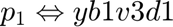
Similarly, the second derivative of G (5th variable, v=5) in region 2 (k=2) with respect to z0 (assuming this corresponds to the 5th derivative index, d=5) would be represented as yb2v5d5.
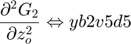
First, create symbolic arrays for the numerical variables (yF) and the corresponding symbolic expressions involving base variables and derivatives (yFsym).
yFF=cell(1,NRegion); %Will be the real variable yFFsym=cell(1,NRegion); % symbolic matrix for kk=1:NRegion yFF{kk} = sym('yF', [NVAR(kk), NDA], 'real'); % Preallocating symbolic array yFFsym{kk} = sym('yFsym', [NVAR(kk), NDA], 'real'); for l = 1:NVAR(kk) for k = 1:NDA % Derivatives yFF{kk}(l, k) = sym(['yb', num2str(kk), 'v', num2str(l), 'd', num2str(k)], 'real'); if k == 1 name = sprintf('yFFsym{kk}(l, 1) = %s%d;', list_var{kk}{l},kk); else name = sprintf('yFFsym{kk}(l, %d) = diff(%s%d%s;', k, list_var{kk}{l},kk, list_dersymbolic{k}); end eval(name); end end end yFsym = vertcat(yFFsym{:}); yF = vertcat(yFF{:});
Perform the substitution in the previously defined equation sets (FF1, ..., FF8) Replace the symbolic expressions (like p1, diff(G2,z0,z0)) with their numerical placeholders (yb1v3d1, yb2v5d5). Substitution is done from highest order derivatives to lowest to ensure correctness.
for le = 1:Nequations
eq_name = sprintf('FF%d', le); eval(sprintf('Eq = %s;', eq_name)); k = 1:NVA; i = NDA:-1:1; Eq = subs(Eq, yFsym(k, i), yF(k, i));
Because 2D we force q0=0 in all the equations in order to simplify
Eq = subs(Eq, q0, 0);
eval(sprintf('%s = Eq;', eq_name));
end
Generate MATLAB functions for the equations and their Jacobians
The final step is to convert the symbolic equations (now in terms of placeholders ybKvLdM) and their Jacobians into efficient MATLAB function files for numerical solving.
% Reshape the numerical placeholder matrix yF into a single column vector 'x'. % This represents the vector of unknowns that the numerical solver will handle. x = reshape(yF', NVA * NDA, 1); % Variables and derivatives for i = 1:Nequations eq_name = sprintf('FF%d', i); dFF_name = sprintf('dFF%d', i); eval(sprintf('%s = sym(zeros(NVA, NVA * NDA));', dFF_name)); k = 1:NVA; eval(sprintf('%s(k, :) = jacobian(%s(k), x);', dFF_name, eq_name)); file_name = sprintf('%sequationF%d', pathequation, i); eval(sprintf('matlabFunction(%s, %s, ''File'', ''%s'', ''Vars'', {z0, r0, x, pa});', eq_name, dFF_name, file_name)); end